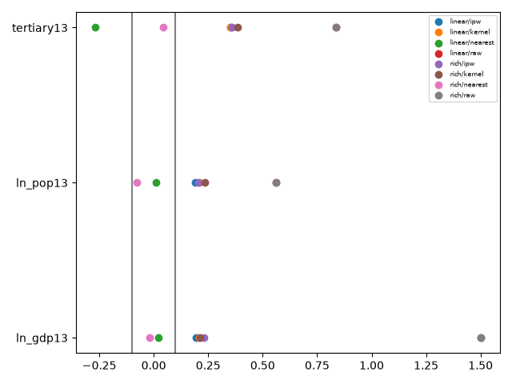

匹配与加权的区别
最近邻有放回匹配保留每次使用对照的权重；卡尺可定义在概率或logit尺度，必须注明。0.2倍logit得分标准差是经验选择而非普遍最优标准。核匹配按距离连续赋权；ATT-IPW令处理权重1、对照权重p/(1−p)，不是一种配对算法。
平衡诊断要固定分母
以原始处理组与对照组方差的合并标准差作为SMD分母，匹配或加权后沿用同一分母。对照频次或IPW进入均值和方差计算。报告SMD、方差比、分位数和有效样本量ESS=(Σw)²/Σw²；不能只用显著性检验，因为其结果依赖样本量。
有规则地调优
公共程序比较线性Logit与含平方和交互项的Logit，输出每项匹配/IPW平衡与有效样本量。最大绝对SMD≤0.10只是诊断阈值，不保证识别。若都失败，应缩小目标、重新选择协变量模型或承认不可比，而不是承诺核匹配一定把SMD降到0.05。
设计阶段与结果阶段
设计阶段不看政策效果，预先固定候选模型、重叠规则与平衡标准。调优之后仍须检验趋势与政策定义。最近邻匹配均值可用于展示，但普通成对t检验忽略对照重复和PS估计，不作为正式推断。
核心公式
学习重点不是记住命令，而是能解释“匹配、加权与平衡性调优”中估计目标、识别假设与数据实现之间的关系。依次阅读基础讲解、推导与案例，再结合公共程序检查实际输出。
从倾向得分到ATT权重
由贝叶斯公式可知，处理组X分布与对照组X分布的密度比，与p(X)/(1−p(X))成比例。因此将对照增量按倾向比加权，并归一化，可使其在正确PS模型下代表处理组的协变量分布。
有限样本中正确模型也不保证每一项样本SMD恰好为零。高权重城市可能控制整个加权对照均值，需要一起报告最大权重、ESS和重叠图，不能只强调处理城市数没有减少。
卡尺、核权重与频次的具体含义
最近邻每个处理城市选择距离最小的对照；有放回时，对照被使用k次，其总权重为k。卡尺拒绝距离过大的配对；核权重则将多个对照按距离连续分配。高斯核具有全域支持，因此极远的城市仍可能得到很小的正权重。
公共实现的卡尺与核带宽都取logit得分的0.2倍样本标准差，便于教学比较，不代表两类估计器都采用了各自最优带宽。核权重对每个处理城市归一化后再加总，以防远距离处理城市因核质量总和较小而被隐式低权重。
平衡表应如何指导下一步
真实线性匹配的第三产业占比SMD约−0.269，不能只看GDP与人口已改善；丰富规格匹配的三项最大绝对SMD约0.0765，但保留31个处理城市、对照ESS约14.8。IPW仍有失衡，应作为失败候选规格保留记录。
即使均值SMD全部小于0.10，还应检查方差比、尾部分位数及高阶项。丰富Logit若用了平方与交互项，只检验原始三个变量不足以全面诊断其平衡。课程表是最小诊断集合，正式研究需扩充到设计中重要的非线性函数。
研究练习与解析
丰富匹配保留31/37城，而IPW保留37城，如何解释两者估计不同？
展开解析
首先区分目标人口和有效权重，再比较共同样本；差异可能来自样本剔除、极端权重或模型设定，不能单独归为方法效应。
双软件实操
本课代码阅读
以下片段用于理解公共程序或读取已生成结果。涉及结果文件时，从analysis目录运行；调用twfe前须按run.py准备分析面板d，并导入相应函数。这里不把片段当成独立端到端程序。
展开本课Python片段
balance = pd.read_csv('results/real/balance.csv')
print(balance.groupby(['model', 'method']).smd.apply(lambda v: v.abs().max()))
print(balance[['model', 'method', 'ess_control']].drop_duplicates())自测与参考答案
修剪一半处理城市后ATT是否仍针对全体处理者？
参考答案
不是；成为保留子样本的ATT。
延伸阅读
方法原文：Callaway与Sant’Anna：多期DID；Sant’Anna与Zhao：DR-DID；Daw与Hatfield：匹配与均值回归；Goodman-Bacon：处理时点变化；Abadie与Imbens：匹配bootstrap。
已运行的真实数据输出
真实样本匹配与加权平衡：失败规格保留

估计表CSV · 平衡诊断CSV · 组别—时间效应CSV · 验证记录及限制